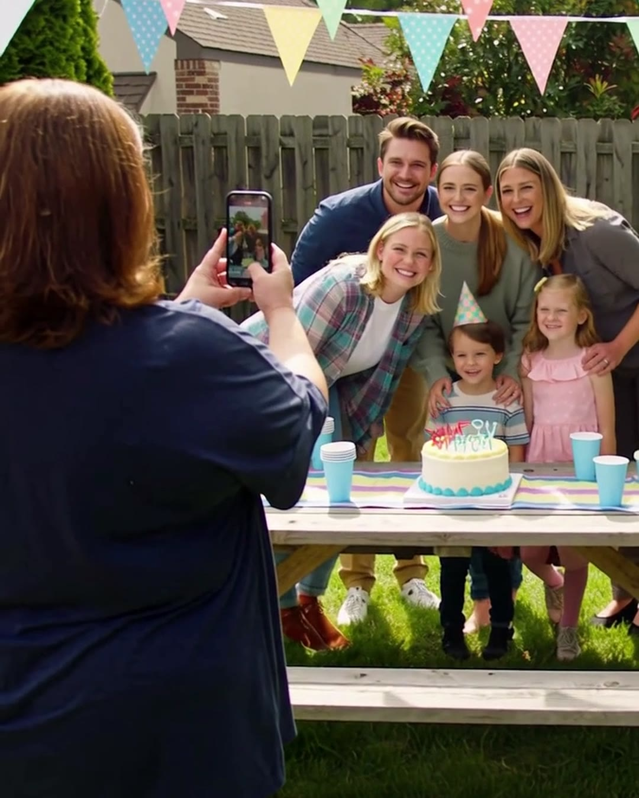
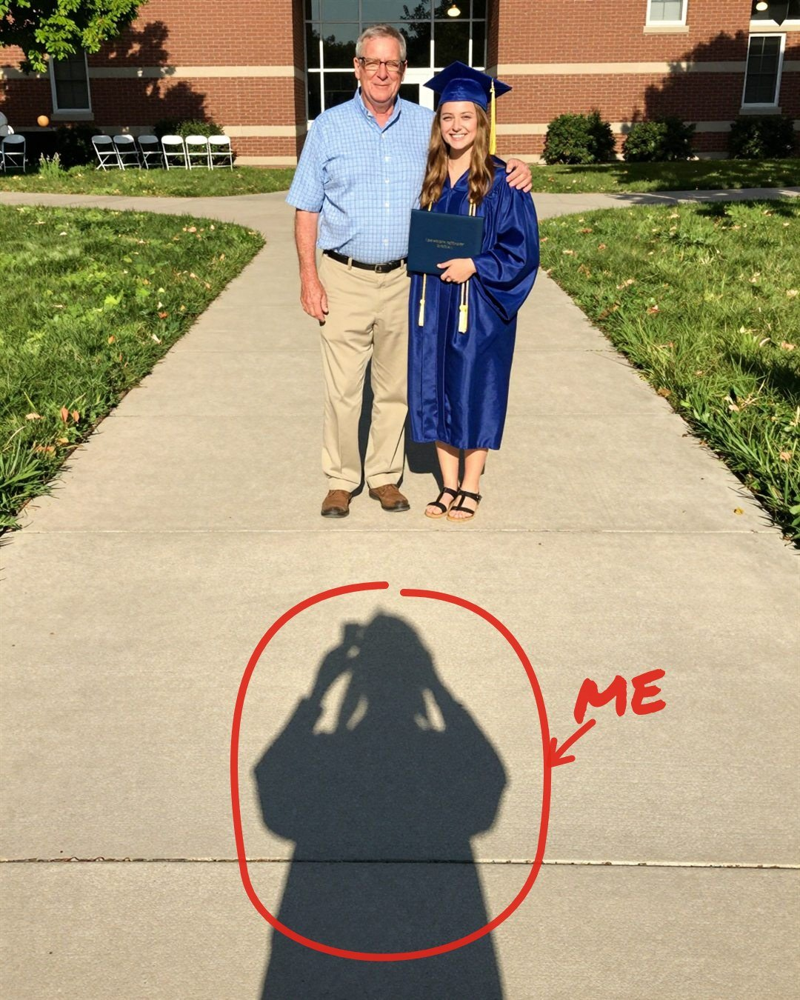
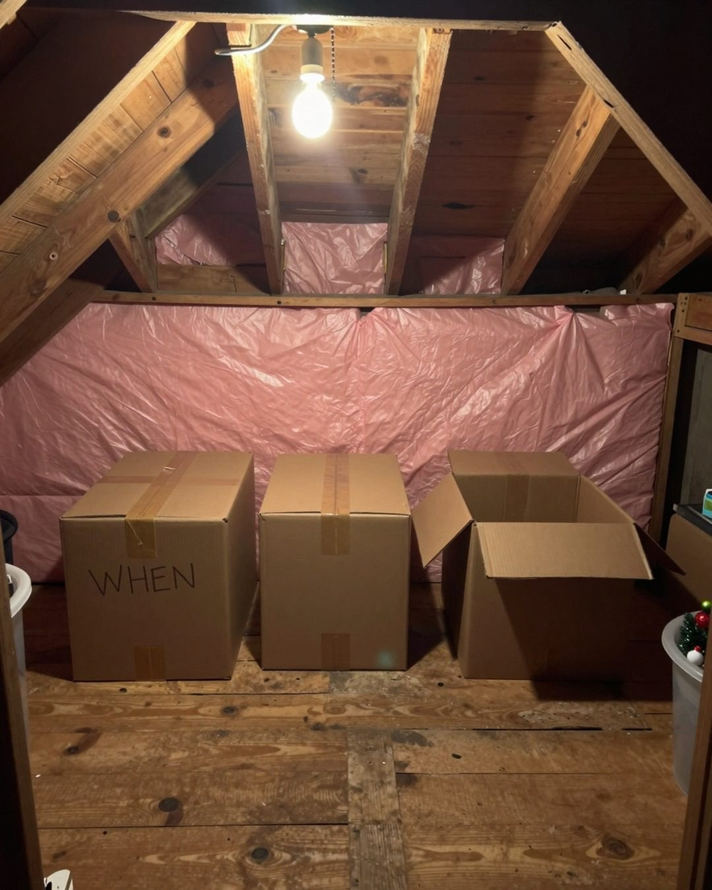
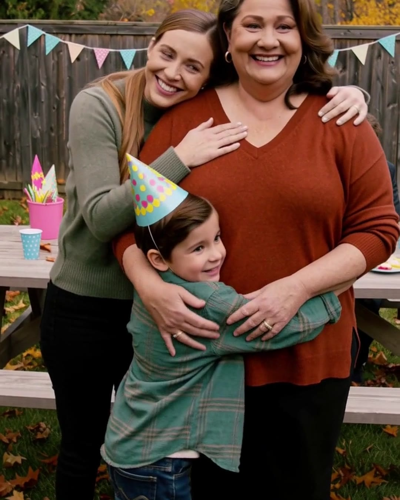

I lost the weight twice. It came back twice. The three boxes in my attic finally told me why.
A green dress worn once. A box with no label. Three years of photos I'm not in. And the question my friend asked me in a parking lot.

Last July · Owen's birthday · our backyard
"Mom! Get in this one!"
My daughter Emily was waving me over. Everybody was already lined up along the fence: her little boy Owen with blue frosting on his chin, my husband Mark squinting through his wire-rim glasses, eleven other people I love.
I was where I always was. Ten feet back. Holding the phone.
"No, no," I laughed. "Somebody has to take it."
Emily's arm dropped. Nobody argued. Nobody argues anymore.
I counted to three and took it. Fourteen people, all smiling at me.
Then I lowered the phone and the smile slid right off my face. I was standing alone on my own lawn, looking at a picture of my whole family.
I wasn't in it. Again.
Here is what none of them knew. Right above that party, up a pull-down ladder in the hallway ceiling, sat three cardboard boxes. I had packed every one of them myself.
That night, after the last car backed out of the driveway, I went up there and opened them.
But the boxes won't make sense until you know why I was the one holding the phone.
"Let me take it!"
It started at my niece Kayla's wedding. Table 9. Somebody caught me from the side, mid-laugh, and tagged me.
At 1:14 in the morning my phone lit up on the nightstand. A comment, from Mark's own sister, Carol.

Four words. She deleted it before breakfast. I had already read it forty times.
After that I became the family photographer. "Let me take it!" Three Christmases. Our 25th anniversary dinner. Emily's graduation.
At Emily's graduation, the only proof I was there is my shadow on the walkway.

See what changed ▸That shadow isn't the sad part. The sad part is that I had already fixed this.
Twice.
Three boxes
11:20 that night. One bare bulb on a pull chain. I sat down on the plywood in my party clothes and pulled the first box into my lap.

Why it kept coming back ▸Box one. One word on the lid in black marker, in my handwriting: WHEN.
Inside, wrapped in tissue paper like a wedding gown: a green wrap dress. I wore it exactly once, to Mark's office holiday party, the winter after I turned 40. Fourteen months of 5:30 a.m. walks and measuring cups for that dress.
By the next fall it didn't zip. So I boxed it. For when.
Box two. Seven years later. Same word on the lid, in smaller handwriting.
A pair of dark jeans with the $64 tag still on. A red wool coat. Not the same size as box one. Nobody tells you that about the second time: you ask for less.
It came back anyway. Faster.
Box three has no label. That night it was empty, flaps open, waiting.
I have never told a living soul what it's for. Both times I got there, I didn't give my big clothes away. I folded them into that box and carried it up this ladder. Just in case.
Both times, I climbed back up and came down with it.
On the two proudest mornings of my adult life, a part of me was already packing for the trip back.
So I finally asked the question I'd dodged for fourteen years. Not "why can't I lose it." I can. I have a green dress to prove it.
Why does it always come back?
If you have a box like that, see what I found out ▸
Why it came back
For fourteen years my answer was: me. I got lazy. I stopped wanting it enough.
That is not what happened. Both times, it began on the same kind of night.
The stove clock says 9:12. And a voice, calm as a neighbor:
There's cake left. You were good all day. Just a sliver. Nobody will know.
That voice did not come back with the weight. It never left. For fourteen months I simply out-argued it. Something like four hundred nights in a row.
Then came a week when I did everything right and the scale didn't move. Then a second one. And the voice changed its tune.
See? It doesn't even work. There's cake left.
I lost one argument, on one tired Tuesday, to something that has never been tired in its life.
Willpower is a sprint. I was running it against something that doesn't sleep.
The second time: same. Flat week. The voice. The ladder.
And the last three years? I couldn't even get it to leave. I added those up on an envelope in a grocery store parking lot.
 See what finally worked ▸
See what finally worked ▸The points app: $239. The meal-kit boxes: $1,104. The gym: $1,080, and I went eleven times. The shakes, the "metabolism" capsules, the 21-day reset, the online coach: $1,889.
$4,312
I climbed down that night certain the problem was me.
Six weeks later, a plate of lemon bars proved me wrong.
Denise
For nine years Denise and I have split a plate of lemon bars at book club. Every month. "I will if you will."
In August I slid the plate toward her.
"I'm good, Lin."
She wasn't gritting her teeth. I know what that looks like. I invented it. She just… didn't care.
I'm not proud of what I said in the parking lot. "Enjoy it. It comes back, you know. Twice, for me."
Denise didn't get angry. She asked me one question.
"What came back first, Lin? The weight? Or the voice?"
I just stood there with my keys in my hand.
"It was never willpower," she said. "It's the noise. Food noise. Some people barely have it. We have it all day. And something finally turned mine down."
That night at 9:12 I texted her. From the fridge.
 Do the two minutes ▸
Do the two minutes ▸If you know that 9:12 voice, take the same 2-minute questionnaire Denise sent me ▸
Why I almost said no
Because I know how my story goes. I get there. I buy a dress. I fill a box.
Denise said, "Then don't ask me if it works. Ask me what's different."
So for two evenings I went hunting for the catch. I didn't find one. I found this.
What it actually is
It's a doctor-guided GLP-1 program. Yes, that. The thing everybody has been whispering about, done properly.
You answer a two-minute questionnaire on your phone. A licensed US clinician reviews your history and prescribes only if it's right for you. The consultation is included.
Not everyone qualifies. If you don't, you're told straight away and you pay nothing. I was braced for a no.
I got a yes. It was at my door the next day.
And it isn't only the medication. Glycine, B12 and B6 are built in to protect muscle and ease side effects. There's an app with a plan for every day and a food log. You can message a clinician any time. And there's a body scanner that tracks fat and muscle as two separate lines, every week.
Everything I had ever tried handed me a new way to shout over the voice. Nothing had ever gone after the voice itself.
Answer the same questions I did ▸
Then the price. $199 a month. $4,312 over three years is about $120 a month, spent on nothing. This was close to what I was already burning, aimed at the one thing nothing else had touched.
Cancel anytime, no fees. A 90-day money-back guarantee. I ran out of excuses.
See if you qualify (2 minutes) ▸
But I've had lovely first weeks before. The real test was always going to be the week that fills the boxes.
The week that used to end it
Day 4: I left half a sandwich on a plate. I am 54 years old and had never done that in my life.
 See if you qualify ▸
See if you qualify ▸Week 2: 9:12 came and went. I only noticed the next morning.
Week 6: there it was. I did everything right, and the number didn't move.
I know this week. I've met it twice.
Monday, before coffee, I stepped on the body scanner they sent me. Not one number. It draws fat and muscle as two separate lines.
And the two lines were not doing the same thing. Something was still happening. For the first time in my life, a flat week had an explanation instead of a verdict.
 Get the free scanner ▸
Get the free scanner ▸That night I typed into the app: "Flat week. This is usually where I quit."
A real person wrote back. Not a pep talk. A plan for the next seven days.
Twice before, that week ended with me in the fridge light holding a fork. This time it ended with me going to bed.
The scanner is free today. Check if you qualify before the offer ends ▸
And then came the Sunday I'd been avoiding for three years.
This fall. Same backyard.
Sunday, October 25 · pumpkins on the picnic table
Emily was lining everybody up along the fence again. Owen in a dinosaur costume six days early.
She didn't call me over this time. She'd stopped asking.
I walked across the lawn to Mark and pressed my phone into his hand.
"Here. Take one of me."
Emily turned around so fast she nearly dropped a pumpkin. "Mom?"
I stepped into the middle. Owen wrapped himself around my legs like I might change my mind.
Mark held the phone up for a long time. Then he took off his glasses and wiped them on his shirt.
"Hang on," he said. "Something's wrong with this thing."
Nothing was wrong with it.

What was different ▸That night I pulled the ladder down one more time. There was still an empty box up there.
The third box
For the third time in my life, I folded my big clothes into that unlabeled box. Then I sat there with the marker in my hand.
I'm not going to tell you it can never come back. I've made that speech twice already, out loud, to a mirror, in a green dress.
I can only tell you what is different so far, for me.
The voice is quiet, so I'm not sprinting anymore. A slow week comes with two lines instead of a verdict. And at 9:12 on a bad night, there is a person to message instead of a fridge to stand in.
So I didn't write JUST IN CASE on the lid. I wrote one word, carried the box down the ladder and left it by the front door.
DONATE.
Mark drove it over on Saturday. He didn't ask what was in it.
And box one? I brought that downstairs too. I won't tell you what fits. That isn't what this story is about.
I'll just say that yesterday was Thanksgiving, I wore green, and I'm in eleven of the pictures.
See if you qualify while the scanner is free ▸
If you've read this far
You probably have a box of your own. Maybe it's one drawer. Maybe a dress at the back of the closet with when written all over it.
Here is everything I wish someone had told me two boxes ago:
- Doctor-guided GLP-1 program, prescribed only if a licensed US clinician says it's right for you
- Glycine, B12 and B6 built in · app with daily plan · unlimited clinician messages
- $199/month on the 3-month plan (regular $299), consultation included, FSA/HSA eligible
- Cancel anytime, no fees · 90-day money-back guarantee
- Black Friday: the body scanner ($350 value) is free with every plan